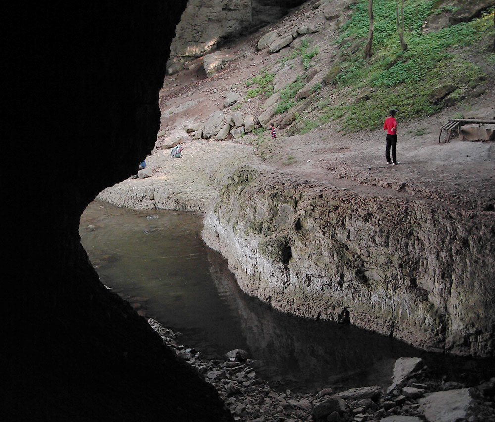
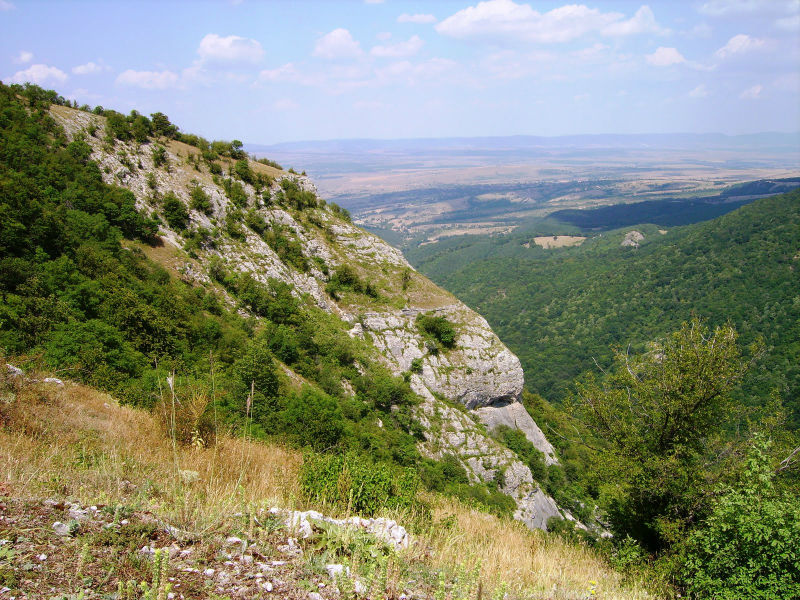

CSS

Във варовиците на Врачанската могила, на юг от рида Милин камък
в Западния Предбалкан, се е оформил своеобразен карстов район.
Той включва много водни пещери, карстови извори, повърхностно и
подземно течащи потоци и реки. В южната му част, между селата Лиляче и Чирен,
се откроява невероятно скално творение, известно като Божият мост.
